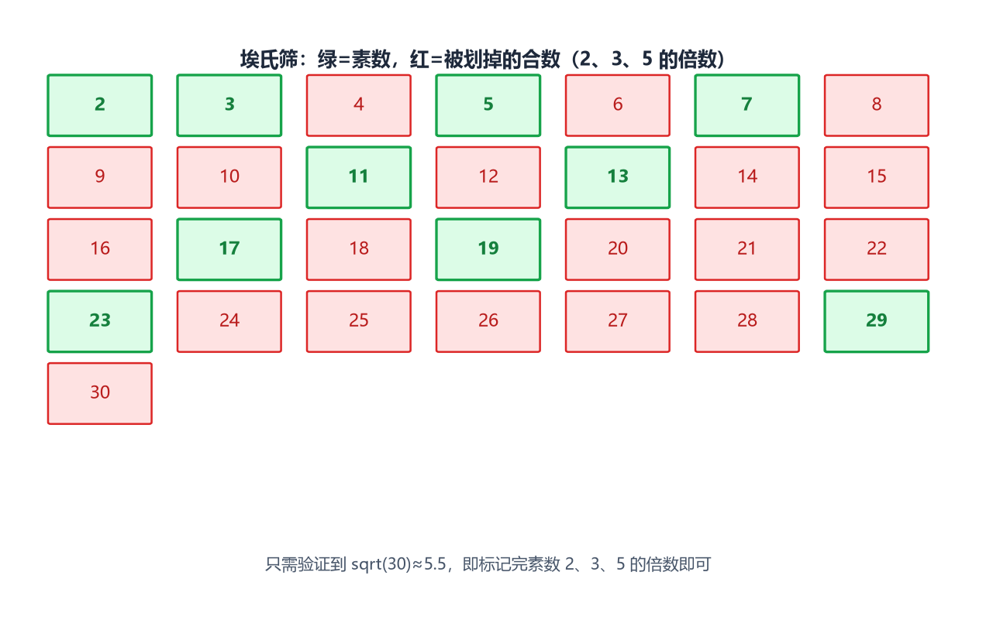
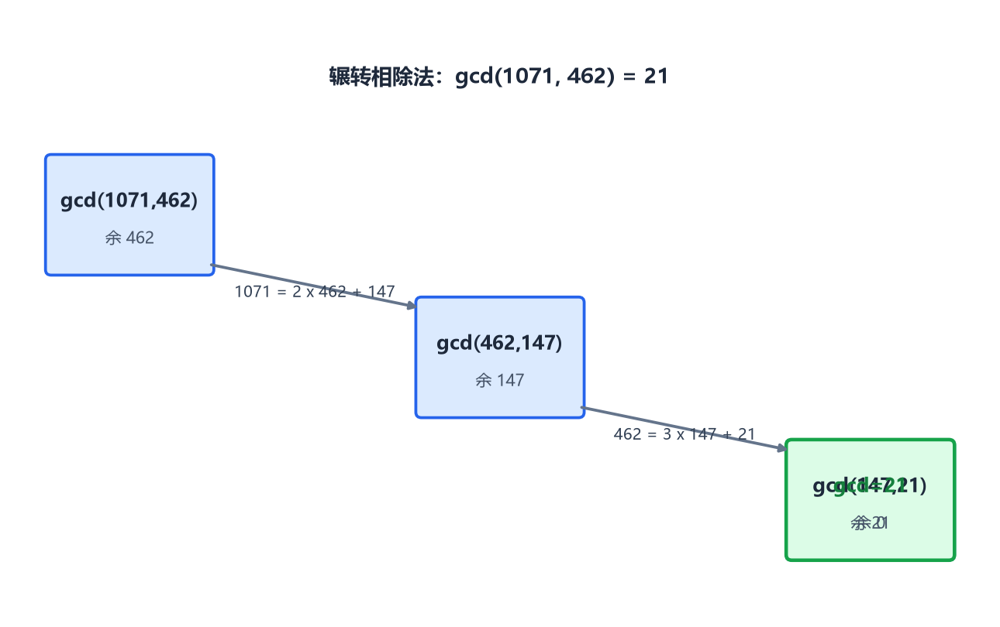
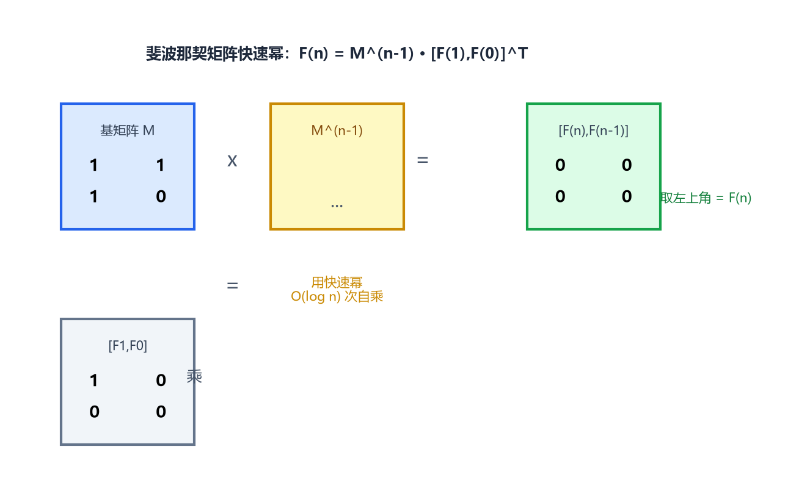

第11章 数学专题
CSP-S 复赛大量题目本质是一道数学题：模运算、组合数、计数、博弈。把数学工具练顺，很多"难题"会变成模板拼装。
11.1 素数判定与筛法
11.1.1 试除法判定素数
n 是否素数，只需试除到 √n（即 i*i ≤ n）即可。
#include <iostream>
using namespace std;
bool isPrime(int n) {
if (n < 2) return false;
for (long long i = 2; i * i <= n; ++i) // 用 long long 防 i*i 溢出
if (n % i == 0) return false;
return true;
}
int main() {
for (int x : {2, 9, 97, 100}) cout << x << (isPrime(x) ? " 是素数\n" : " 不是\n");
return 0;
}
11.1.2 埃氏筛（教学示例）
每找到一个素数，划掉它的所有倍数。复杂度 O(n log log n)。

图 11-1：对 2~30 做埃氏筛。2、3、5 是素数（绿色），它们的倍数被划掉（红色）。√30 ≈ 5.5，只需验证到 5 即可筛完。
#include <iostream>
#include <vector>
using namespace std;
vector<int> primes;
vector<bool> isComp;
void sieve(int n) {
isComp.assign(n + 1, false);
for (int i = 2; i <= n; ++i) {
if (!isComp[i]) {
primes.push_back(i);
for (long long j = 1LL * i * i; j <= n; j += i) isComp[j] = true;
}
}
}
int main() {
sieve(30);
for (int p : primes) cout << p << " "; // 2 3 5 7 11 13 17 19 23 29
cout << "\n";
return 0;
}
11.1.3 欧拉筛（线性筛，洛谷 P3383 思路）
每个合数只被它的最小质因子筛一次，复杂度 O(n)。标志是内层 if (i % p == 0) break;。
#include <iostream>
#include <vector>
using namespace std;
vector<int> primes;
vector<bool> isComp;
void linearSieve(int n) {
isComp.assign(n + 1, false);
for (int i = 2; i <= n; ++i) {
if (!isComp[i]) primes.push_back(i);
for (int p : primes) {
if (1LL * i * p > n) break;
isComp[i * p] = true;
if (i % p == 0) break; // 保证每个合数只被最小质因子筛一次
}
}
}
11.2 最大公约数与最小公倍数
11.2.1 辗转相除法（欧几里得）
gcd(a, b) = gcd(b, a mod b)，直到 b == 0。lcm(a, b) = a·b / gcd(a,b)，先除后乘防爆。

图 11-2：求 gcd(1071, 462) 的步骤。每步把 a 换成 b、b 换成 a mod b，最后的余数 21 即最大公约数。
#include <iostream>
using namespace std;
int gcd(int a, int b) { return b ? gcd(b, a % b) : a; }
int lcm(int a, int b) { return 1LL * a / gcd(a, b) * b; } // 先除后乘防溢出
int main() {
cout << "gcd(1071,462)=" << gcd(1071, 462) << "\n"; // 21
cout << "lcm(4,6)=" << lcm(4, 6) << "\n"; // 12
return 0;
}
11.2.2 扩展欧几里得（解 ax + by = gcd）
exgcd 在求 gcd 的同时，得到一组整数解 (x, y) 满足 a·x + b·y = gcd(a, b)。是求逆元、解线性同余的基础。
#include <iostream>
using namespace std;
int exgcd(int a, int b, int& x, int& y) {
if (!b) { x = 1; y = 0; return a; }
int g = exgcd(b, a % b, y, x);
y -= a / b * x; // 回溯更新 y
return g;
}
int main() {
int x, y;
int g = exgcd(1071, 462, x, y); // 得到一组整数解满足 1071*x + 462*y = g
cout << "gcd=" << g << " x=" << x << " y=" << y << "\n"; // g=21，x,y 为某组整数解
return 0;
}
11.3 质因数分解与约数
11.3.1 试除分解
从 2 到 √n 不断除以找到的因子。若最后 n > 1，它本身是质因子。
#include <iostream>
#include <vector>
using namespace std;
vector<pair<int, int>> factor(int n) {
vector<pair<int, int>> res;
for (long long i = 2; i * i <= n; ++i) {
int c = 0;
while (n % i == 0) { n /= i; ++c; }
if (c) res.push_back({(int)i, c});
}
if (n > 1) res.push_back({(int)n, 1}); // 余下的质因子
return res;
}
int main() {
auto r = factor(60);
for (auto& p : r) cout << p.first << "^" << p.second << " "; // 2^2 3^1 5^1
cout << "\n";
return 0;
}
11.3.2 约数个数与约数和
若 n = p₁^e₁ · p₂^e₂ · … · pₖ^eₖ，则：
- 约数个数
d(n) = (e₁+1)(e₂+1)…(eₖ+1) - 约数和
σ(n) = ∏ (pᵢ^(eᵢ+1) − 1)/(pᵢ − 1)
#include <iostream>
using namespace std;
// 计算约数个数（配合 11.3.1 的分解）：
int divCount(int n) {
int ans = 1;
for (long long i = 2; i * i <= n; ++i) {
int c = 0;
while (n % i == 0) { n /= i; ++c; }
if (c) ans *= (c + 1);
}
if (n > 1) ans *= 2;
return ans;
}
int main() {
cout << "60 的约数个数=" << divCount(60) << "\n"; // (2+1)(1+1)(1+1)=12
return 0;
}
11.4 模运算与快速幂
11.4.1 模四则
加、减、乘可直接模；除不能直接模，要用逆元（见 11.5）。常用模数 1e9+7（素数）。
11.4.2 快速幂（洛谷 P1226 思路）
求 aᵇ mod m，把指数 b 按二进制拆分，复杂度 O(log b)。
#include <iostream>
using namespace std;
long long qpow(long long a, long long b, long long m) {
long long r = 1 % m;
a %= m;
while (b) {
if (b & 1) r = r * a % m;
a = a * a % m;
b >>= 1;
}
return r;
}
int main() {
cout << "3^5 mod 7 = " << qpow(3, 5, 7) << "\n"; // 5
return 0;
}
11.5 乘法逆元
在模 m 下，a 的逆元 inv(a) 满足 a·inv(a) ≡ 1 (mod m)。有了逆元，除法 x/a 改写为 x·inv(a)。
11.5.1 费马小定理（模数为素数）
若 m 为素数且 gcd(a, m) = 1，则 inv(a) = a^(m−2) mod m（洛谷 P3811 思路）。
long long inv(long long a, long long m) { return qpow(a, m - 2, m); }
11.5.2 扩展欧几里得求逆元（模数任意）
解 a·x ≡ 1 (mod m) 即 a·x + m·y = 1，用 exgcd 求出 x 再调整到正数。
11.5.3 线性求逆元（批量）
已知模 m 为素数，可在 O(n) 内求出 1..n 所有逆元：
// inv[1] = 1; inv[i] = (m - m/i) * inv[m % i] % m; （要求 m 为素数）
#include <iostream>
using namespace std;
const int M = 1e9 + 7;
int inv[100];
int main() {
inv[1] = 1;
for (int i = 2; i < 100; ++i) inv[i] = (long long)(M - M / i) * inv[M % i] % M;
cout << "inv(3)=" << inv[3] << " (3*inv(3)%M=1?)\n"; // 333333336
return 0;
}
11.6 排列与组合
- 加法原理：分类相加；乘法原理：分步相乘。
- 排列
A(n, k) = n!/(n−k)!（从 n 选 k 且考虑顺序）。 - 组合
C(n, k) = n!/(k!(n−k)!)（不考虑顺序），满足C(n,k)=C(n,n−k)。 - 组合数递推（杨辉三角）：
C(i,j) = C(i−1,j−1) + C(i−1,j)，边界C(i,0)=C(i,i)=1。
#include <iostream>
using namespace std;
const int N = 2010, MOD = 1e9 + 7;
int C[N][N];
void init() {
for (int i = 0; i < N; ++i) {
C[i][0] = C[i][i] = 1;
for (int j = 1; j < i; ++j)
C[i][j] = (C[i-1][j-1] + C[i-1][j]) % MOD;
}
}
int main() {
init();
cout << "C(5,2)=" << C[5][2] << "\n"; // 10
return 0;
}
11.7 容斥原理
求并集大小：两集合 |A∪B| = |A| + |B| − |A∩B|；三集合再加回两两交、减去三交。常用于"至少满足一个条件"的计数。
// 例：1~n 中能被 a 或 b 整除的个数 = n/a + n/b - n/lcm(a,b)
#include <iostream>
using namespace std;
int gcd(int a, int b){ return b?gcd(b,a%b):a; }
int lcm(int a,int b){ return a/gcd(a,b)*b; }
int main() {
int n = 100, a = 3, b = 5;
cout << (n/a + n/b - n/lcm(a,b)) << "\n"; // 47
return 0;
}
11.8 经典数列：错排与卡特兰
- 错排数
D(n)：n个元素全错位的排列数，D(n) = (n−1)(D(n−1)+D(n−2))，D(1)=0, D(2)=1。 - 卡特兰数
Cat(n)：Cat(n) = C(2n, n)/(n+1)，对应合法括号序列、n 个数出栈的序列数等。
#include <iostream>
using namespace std;
// 错排数（取模）
const int MOD = 1e9 + 7;
int derange(int n) {
if (n == 1) return 0;
if (n == 2) return 1;
long long a = 0, b = 1; // D(1), D(2)
for (int i = 3; i <= n; ++i) {
long long c = ((i - 1) * (a + b)) % MOD;
a = b; b = c;
}
return b;
}
int main() {
cout << "D(4)=" << derange(4) << "\n"; // 9
return 0;
}
11.9 矩阵与矩阵快速幂
11.9.1 矩阵乘法
两个 r×m 与 m×c 的矩阵相乘得 r×c，每个元素 C[i][j] = Σ A[i][k]·B[k][j]。矩阵乘法不满足交换律，但满足结合律——因此能用快速幂加速递推。
11.9.2 斐波那契矩阵加速（洛谷 P1962 思路）
递推 F(n) = F(n−1) + F(n−2) 写成矩阵：
[ F(n) ] = [1 1]^(n-1) [ F(1) ]
[ F(n-1) ] [1 0] [ F(0) ]
用矩阵快速幂把 O(n) 降到 O(log n)，可算 n ≤ 10¹⁸。

图 11-3：斐波那契基矩阵 [[1,1],[1,0]]。F(n) 由该矩阵自乘 n−1 次后取对应元素得到，自乘用快速幂加速。
#include <iostream>
using namespace std;
const long long MOD = 1e9 + 7;
struct Mat { long long a[2][2]; };
Mat mul(Mat x, Mat y) {
Mat z = {0};
for (int i = 0; i < 2; ++i)
for (int j = 0; j < 2; ++j)
for (int k = 0; k < 2; ++k)
z.a[i][j] = (z.a[i][j] + x.a[i][k] * y.a[k][j]) % MOD;
return z;
}
Mat mpow(Mat x, long long n) {
Mat r = {1, 0, 0, 1}; // 单位矩阵
while (n) { if (n & 1) r = mul(r, x); x = mul(x, x); n >>= 1; }
return r;
}
long long fib(long long n) { // F(0)=0, F(1)=1
if (n <= 1) return n;
Mat m = mpow({1, 1, 1, 0}, n - 1);
return m.a[0][0]; // 结果即 F(n)
}
int main() {
cout << "F(10)=" << fib(10) << "\n"; // 55
return 0;
}
11.10 博弈论基础
11.10.1 Nim 游戏（洛谷 P2197 思路）
有若干堆石子，每人轮流从一堆取任意多。所有堆的异或和记为 S：
S == 0：先手必败（P 态）S ≠ 0：先手必胜（N 态），且存在一步把S变为 0
#include <iostream>
using namespace std;
int main() {
int h[] = {3, 4, 5};
int s = 0;
for (int x : h) s ^= x;
cout << (s ? "先手必胜\n" : "先手必败\n"); // 3^4^5=2 ≠0 -> 先手必胜
return 0;
}
11.10.2 巴什博弈（Bash Game）
一堆 n 个，每人取 1~n… 取 1~m 个，取最后一个者胜：若 n mod (m+1) == 0 先手必败，否则先手必胜（先手取 n mod (m+1) 个留倍数局）。
11.10.3 SG 函数（简述）
把游戏拆成子游戏，每个状态定义 SG = mex{ SG(后继) }。多个独立游戏的合成 SG = SG₁ xor SG₂ xor …（Nim 和）。SG=0 为必败态。Nim 是每堆 SG = 堆大小 的特例。
11.11 概率与期望基础
期望 E = Σ pᵢ·xᵢ（加权平均）。掷一个公平骰子期望点数 (1+2+3+4+5+6)/6 = 3.5。复赛中常见"期望 DP"：从后往前或递推求期望，利用期望的线性性 E(X+Y) = E(X) + E(Y)。
#include <iostream>
using namespace std;
int main() {
// 掷骰子期望
double e = 0;
for (int i = 1; i <= 6; ++i) e += i / 6.0;
cout << "骰子期望=" << e << "\n"; // 3.5
return 0;
}
11.12 本章小结
- 数论三件套：筛素数（欧拉筛）→ gcd/exgcd → 质因数分解，配逆元与快速幂处理模运算。
- 组合计数：加法/乘法原理打底，容斥处理"至少一个"，卡特兰/错排是高频特殊数列。
- 递推求大项：先写矩阵，再矩阵快速幂压到
O(log n)。 - 博弈：Nim 看异或和，巴什看
(m+1)余数，复杂游戏用 SG 函数。 - 一切模运算记住：
+−×可模，除用逆元，模数优先选素数1e9+7。
随堂检测
-
（单选）埃氏筛的时间复杂度约为？ A.
O(n)B.O(n log log n)C.O(n²)D.O(n log n)参考答案
答案：B。解析（考点）：埃氏筛每轮划掉素数的倍数，总复杂度
O(n log log n)；欧拉筛才达到严格的O(n)。 -
（单选）
gcd(1071, 462)的值是？ A. 21 B. 42 C. 7 D. 3参考答案
答案：A。解析（考点）：辗转相除
1071=2×462+147、462=3×147+21、147=7×21+0，最后非零余数 21 即最大公约数。 -
（单选）60 的约数个数
d(60)为？ A. 6 B. 8 C. 12 D. 10参考答案
答案：C。解析（考点）：
60 = 2²·3¹·5¹，约数个数(2+1)(1+1)(1+1) = 12。 -
（单选）模素数
p下，求a的乘法逆元可直接用？ A.a^(p−1) mod pB.a^(p−2) mod pC.a^(p) mod pD.a^(p+1) mod p参考答案
答案：B。解析（考点）：费马小定理
a^(p−1) ≡ 1 (mod p)，故逆元inv(a) = a^(p−2) mod p。 -
（单选）
n堆 Nim 游戏，石子数异或和为 0 意味着？ A. 先手必胜 B. 先手必败 C. 平局 D. 无法确定参考答案
答案：B。解析（考点）：异或和
S=0是必败态（P 态），先手无论怎么取都会让S变非零，后手可再调回 0。 -
（单选）用矩阵快速幂求斐波那契第
n项，时间复杂度是？ A.O(n)B.O(n²)C.O(log n)D.O(1)参考答案
答案：C。解析（考点）：把递推写成
2×2基矩阵自乘n−1次，矩阵乘法O(1)（常数 8 次乘），自乘用快速幂O(log n)。